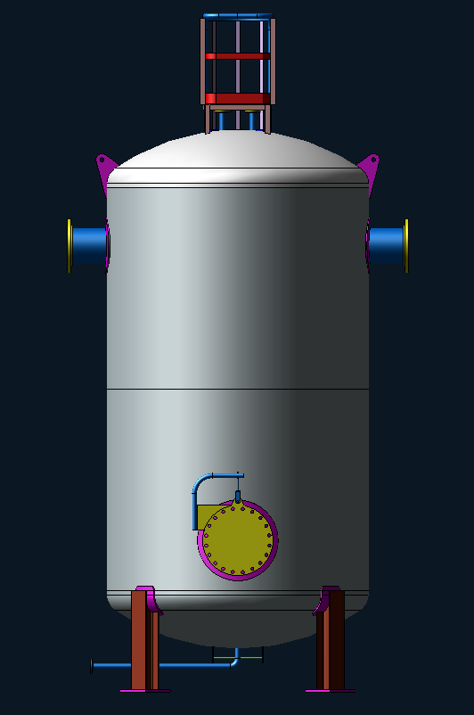
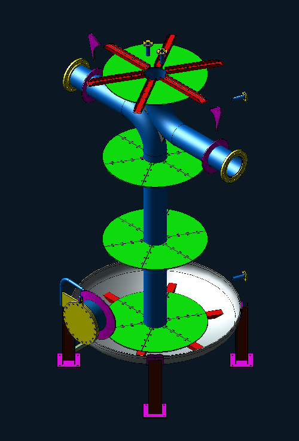

22 m³ Thermal Buffer Tank CFD
CFD-led development of an internally baffled chilled-water buffer tank, achieving a 20.8°C outlet temperature from a 30°C inlet condition.
Project overview
The project covers the design and CFD assessment of a 22 m³ thermal buffer tank for a data-center chilled-water system. The thermal objective was to reduce the water temperature from a 30°C inlet condition toward a 20°C outlet target. Through iterative development of the internal flow arrangement, the final design achieved a simulated outlet temperature of 20.8°C.
Engineering objective
The objective is to develop a practical tank arrangement that supports the required chilled-water temperature transition while promoting effective use of the available storage volume. The CFD model provides a visual basis for reviewing temperature distribution, internal circulation, and the interaction between the inlet, outlet, and internal tank components.
Design development
The initial concept used a conventional two-diffuser arrangement. CFD evaluation showed that this configuration did not provide the required thermal performance. Internal baffles were therefore designed to redirect and control the water path, increase the effective flow travel through the tank, and improve the temperature transition before the water reached the outlet.
Design scope
- Develop the mechanical arrangement of the 22 m³ thermal buffer tank.
- Evaluate the initial two-diffuser configuration and identify its thermal-performance limitation.
- Design an internal baffle arrangement to improve flow distribution through the available tank volume.
- Assess the revised tank's thermal and flow behavior using CFD visualization.
- Verify the revised design against the 30°C inlet condition and 20°C target outlet temperature.
- Prepare the tank model and internal assembly for engineering coordination and further development.
CFD outcome
The baffled configuration achieved a simulated outlet temperature of 20.8°C. This represented a substantial improvement over the conventional two-diffuser arrangement and brought the design close to the 20°C project target.
Project gallery




Additional verified design details, boundary conditions, analysis settings, and results can be added as the project documentation develops.